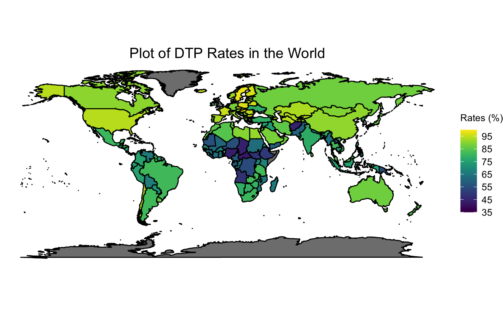

# Population Numbers population_file <- system.file( "extdata", "population-by-country.xlsx", package = "CAvaccines" ) population_country <- suppressMessages( readxl::read_excel(population_file, na = "", range = "B2:D191", col_names = FALSE)) names(population_country) <- c("ISO_code", "Year", "Population") population_country$Year <- NULL # Incidence incidence_file <- system.file( "extdata", "incidence_series.xls", package = "CAvaccines" ) incidence_series <- suppressMessages( readxl::read_excel(incidence_file, sheet = "Pertussis", na = "", col_names = TRUE)) incidence_series <- incidence_series %>% tidyr::gather(Year, Cases, -c(WHO_REGION, ISO_code, Cname, Disease)) %>% na.omit() incidence_series$Cname <- stringr::str_remove(incidence_series$Cname, " \\(.*\\)") incidence_series$Cname[incidence_series$Cname == "United States of America"] <- "USA" incidence_series$Cname[incidence_series$Cname == "Russian Federation"] <- "Russia" incidence_series <- dplyr::left_join(incidence_series, population_country, by = "ISO_code") %>% dplyr::mutate(Cases = Cases / Population) str(incidence_series) #> tibble [6,159 × 7] (S3: tbl_df/tbl/data.frame) #> $ WHO_REGION: chr [1:6159] "EMR" "EUR" "AFR" "EUR" ... #> $ ISO_code : chr [1:6159] "AFG" "ALB" "DZA" "AND" ... #> $ Cname : chr [1:6159] "Afghanistan" "Albania" "Algeria" "Andorra" ... #> $ Disease : chr [1:6159] "pertussis" "pertussis" "pertussis" "pertussis" ... #> $ Year : chr [1:6159] "2018" "2018" "2018" "2018" ... #> $ Cases : num [1:6159] 2.04e-05 5.47e-06 5.59e-07 2.99e-05 0.00 ... #> $ Population: num [1:6159] 23898198 3473835 30429000 66824 10377000 ... #> - attr(*, "na.action")= 'omit' Named int [1:1407] 19 28 31 34 38 50 56 63 64 65 ... #> ..- attr(*, "names")= chr [1:1407] "19" "28" "31" "34" ... # Coverage coverage_file <- system.file( "extdata", "Numeric_coverage_series.xls", package = "CAvaccines" ) coverage_series <- suppressMessages( readxl::read_excel(coverage_file, sheet = "world_coverage", na = "", range = readxl::cell_cols("A:G"), col_names = TRUE)) coverage_series <- coverage_series %>% dplyr::mutate(Percent_covrage = Percent_covrage/ 100) %>% tidyr::spread(Vaccine, Percent_covrage) coverage_series$Year <- as.character(coverage_series$Year) coverage_series <- coverage_series[, which(colMeans(!is.na(coverage_series)) > 0.40)] # Fixing country names coverage_series$Cname <- stringr::str_remove(coverage_series$Cname, " \\(.*\\)") coverage_series$Cname[coverage_series$Cname == "Brunei Darussalam"] <- "Brunei" coverage_series$Cname[coverage_series$Cname == "Cabo Verde"] <- "Cape Verde" coverage_series$Cname[coverage_series$Cname == "Congo"] <- "Republic of Congo" coverage_series$Cname[coverage_series$Cname == "Côte d'Ivoire"] <- "Ivory Coast" coverage_series$Cname[coverage_series$Cname == "Democratic People's Republic of Korea"] <- "North Korea" coverage_series$Cname[coverage_series$Cname == "Lao People's Democratic Republic"] <- "Laos" coverage_series$Cname[coverage_series$Cname == "North Macedonia"] <- "Macedonia" coverage_series$Cname[coverage_series$Cname == "Republic of Moldova"] <- "Moldova" coverage_series$Cname[coverage_series$Cname == "Syrian Arab Republic"] <- "Syria" coverage_series$Cname[coverage_series$Cname == "United Republic of Tanzania"] <- "Tanzania" coverage_series$Cname[coverage_series$Cname == "Viet Nam"] <- "Vietnam" coverage_series$Cname[coverage_series$Cname == "United States of America"] <- "USA" coverage_series$Cname[coverage_series$Cname == "Russian Federation"] <- "Russia"
to_map <- coverage_series %>% dplyr::group_by(Cname) %>% dplyr::summarize( BCG = mean(BCG*100, na.rm = T), DTP1 = mean(DTP1*100, na.rm = T), DTP3 = mean(DTP3*100, na.rm = T), HepB3 = mean(HepB3*100, na.rm = T), MCV1 = mean(MCV1*100, na.rm = T), TT2plus = mean(TT2plus*100, na.rm = T)) #> `summarise()` ungrouping output (override with `.groups` argument) # Determine min and max values min_v = DescTools::RoundTo(min(to_map$DTP3, na.rm = T), 5) max_v = DescTools::RoundTo(max(to_map$DTP3, na.rm = T), 5) diff = max_v - min_v # Based on min and max values, determine optimal breaks. We stipulate # that there shoud be at least five breaks if (diff <= 5){ breaks = seq(min_v, max_v, 1) } else if (diff <= 25){ breaks = seq(min_v, max_v, 5) } else { breaks = seq(min_v, max_v, 10) } countries = ggplot2::map_data("world") # setdiff(to_map$Cname, countries$region) # setdiff(countries$region, to_map$Cname) # Combine mapping data and our data world_map = dplyr::left_join(countries, to_map, by = c("region" = "Cname")) # Create map ggplot(data = world_map, aes(x = .data$long, y = .data$lat, group = .data$group, fill = DTP3)) + coord_quickmap() + theme_void() + geom_polygon(color = "black") + viridis::scale_fill_viridis(option = "viridis", breaks = breaks, limits = c(min_v, max_v)) + theme(plot.title = element_text(hjust = 0.5, size = 15), legend.title = element_text(vjust = 2, size = 10), legend.text = element_text(size = 10)) + labs(title = "Plot of DTP Rates in the World", fill = "Rates (%)")

incidence_series_2015 <- incidence_series %>% dplyr::filter(Year == "2015") coverage_series_2015 <- coverage_series %>% dplyr::filter(Year == "2015") coverage_series_2015$TT2plus <- NULL combined_2015 <- dplyr::full_join(incidence_series_2015, coverage_series_2015, by = c("WHO_REGION", "ISO_code", "Cname", "Year")) %>% dplyr::select(c(Cases, BCG, DTP1, DTP3, HepB3, MCV1, Pol3)) %>% na.omit() %>% scale() %>% as.data.frame() str(combined_2015) #> 'data.frame': 100 obs. of 7 variables: #> $ Cases: num 0.13 -0.41 -0.41 0.369 -0.145 ... #> $ BCG : num 0.448 0.597 -0.968 0.597 0.597 ... #> $ DTP1 : num 0.58 0.58 0.214 0.122 0.397 ... #> $ DTP3 : num 0.657 0.456 -0.549 0.389 0.389 ... #> $ HepB3: num 0.659 0.458 -0.545 0.391 0.391 ... #> $ MCV1 : num 0.0877 0.4659 -0.6685 0.0121 0.6171 ... #> $ Pol3 : num 0.624 0.469 -0.463 0.314 0.547 ... set.seed(0) t_sample = caTools::sample.split(combined_2015$Cases, SplitRatio = 0.7) t_train = subset(combined_2015, t_sample == TRUE) t_test = subset(combined_2015, t_sample == FALSE) lm <- stats::lm(Cases ~., data = t_train) summary(lm) #> #> Call: #> stats::lm(formula = Cases ~ ., data = t_train) #> #> Residuals: #> Min 1Q Median 3Q Max #> -0.4592 -0.3527 -0.2263 -0.0620 4.8742 #> #> Coefficients: #> Estimate Std. Error t value Pr(>|t|) #> (Intercept) -0.08086 0.09711 -0.833 0.408 #> BCG 0.04164 0.15337 0.272 0.787 #> DTP1 -0.04643 0.25908 -0.179 0.858 #> DTP3 0.95612 1.45467 0.657 0.513 #> HepB3 -0.81563 1.36304 -0.598 0.552 #> MCV1 -0.22438 0.28365 -0.791 0.432 #> Pol3 0.15761 0.44761 0.352 0.726 #> #> Residual standard error: 0.7964 on 63 degrees of freedom #> Multiple R-squared: 0.02868, Adjusted R-squared: -0.06383 #> F-statistic: 0.31 on 6 and 63 DF, p-value: 0.9295 predict_lm <- lm %>% stats::predict(t_test) print(paste("Test R2 Linear:", round(caret::R2(predict_lm, t_test$Cases), 4))) #> [1] "Test R2 Linear: 0.0528"